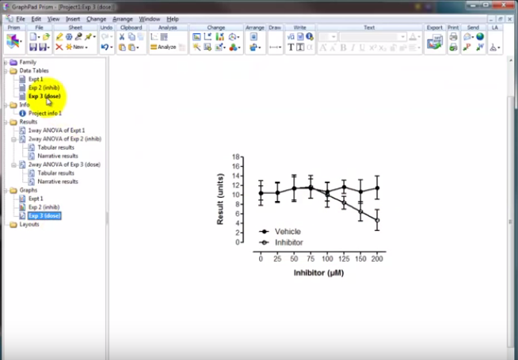
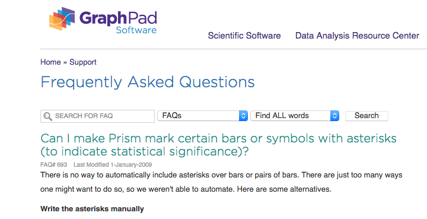
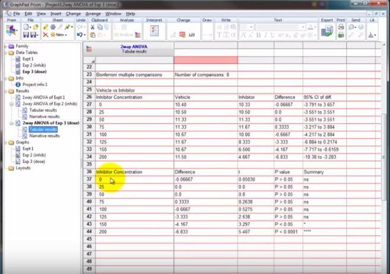
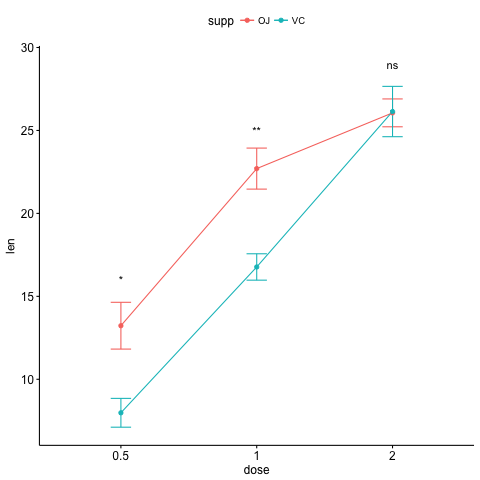
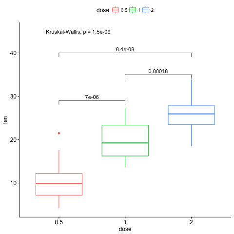

A network of students and faculty encouraging reproducible research and data analysis practices
Plots and code taken from:


"Write the asterisks manually"

$150-300/year license to copy paste asterisks?
How is this not figured out by now?


Add on libraries:
Free as in beer, Free as in speech
library(ggplot2) library(ggpubr) str(ToothGrowth)
'data.frame': 60 obs. of 3 variables: $ len : num 4.2 11.5 7.3 5.8 6.4 10 11.2 11.2 5.2 7 ... $ supp: Factor w/ 2 levels "OJ","VC": 2 2 2 2 2 2 2 2 2 2 ... $ dose: num 0.5 0.5 0.5 0.5 0.5 0.5 0.5 0.5 0.5 0.5 ...
This is as easy as:
library(ggplot2) library(ggpubr) data("ToothGrowth") ggline(ToothGrowth, x = "dose", y = "len", add = "mean_se", color = "supp")+ stat_compare_means(aes(group = supp), label = "p.signif", label.y = c(16, 25, 29))
For the multiple comparisons,
# specify comparisons my_comps <- list(c("0.5", "1"), c("1", "2"), c("0.5", "2")) ggboxplot(ToothGrowth, x = "dose", y = "len", color = "dose")+ stat_compare_means(comparisons = my_comps, label.y = c(29, 35, 40))+ stat_compare_means(label.y = 45)
come to RRN meetings!
You go from your RAW data to this plot
Plots and code taken from:
Spread the word and let us help you!